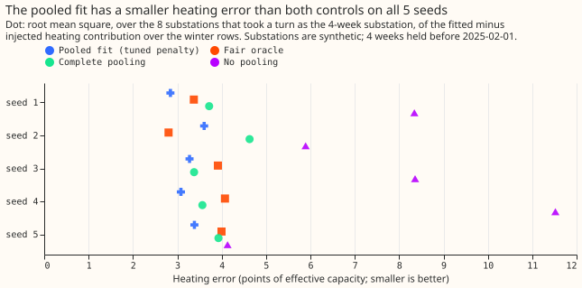
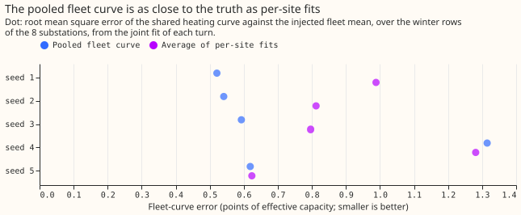
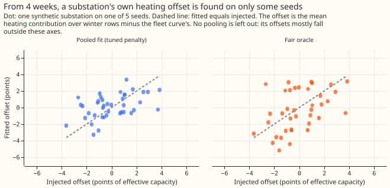

Differentiable physics, N0 gate 2: the partly pooled convex model's heating error against the injected truth
On synthetic substations with a known heating curve, a partly pooled regression model estimated
the heating response of a substation with only 4 winter weeks of data better than fitting that
substation alone or copying the fleet's curve, but no method recovered the sign of the substation's
own deviation from the fleet's curve on most seeds. The fleet's shared heating curve was recovered
as well as the average of separate per-substation fits recovers it. In this synthetic test, sharing
the heating curve across substations therefore worked, and a substation's own offset from that
curve was not learnable from 4 weeks. The next experiment, which fits a partly pooled generalised
additive model (GAM, a demand model built from smooth curves), should not rely on offsets learned
from 4 weeks. The verdict is partly supported: three of the four pass-or-fail lines written down
before the run hold (listed under "Pre-registered lines").
The method is the convex regression model of experiment 109. The model gives each substation the fleet's shared coefficients plus a penalised deviation of its own ("partial pooling"; the model is convex, so its fit has one optimum). Experiment 150 could not tell whether the method shrinks a substation's own coefficients correctly, because in 4 weeks of June the heating signal is weak.
Each synthetic substation has a known heating curve: one shared by the fleet plus its own offset. The eight synthetic substations use the real calendar and weather of real substations. Each synthetic substation in turn keeps only the 4 weeks before 2025-02-01, when heating dominates demand, and the other seven keep 2 years. The experiment repeats this procedure on five random draws of the injected coefficients ("seeds"). The injected fleet coefficients and the noise level are the same as in experiment 150.
Terms used below. The "fleet" is the eight synthetic substations. The "heating error" is the root mean square of the fitted heating contribution to demand minus the injected one. It is taken over the November to March rows of the substation's 2 years of calendar and weather, and is stated in points of effective capacity (percentage points of the substation's capacity). The "offset" is the substation's mean heating contribution minus the fleet curve's. The "fair oracle" is a reference estimator that is told the fleet mean, the true spread of each coefficient, and the noise variance, and then estimates every coefficient from the same 4 weeks. The two "controls" are the pooled fit run with no pooling (penalty 0 rows of evidence) and with complete pooling (penalty 1,000,000 rows). The "pooled fit" uses the penalty experiment 150 tuned on each seed (300 to 1,000 rows).



Pre-registered lines
- W1, the shared curve. W1 holds on a seed when the fleet curve's error is at most 1.1 times the per-site average's error. The fleet curve's error is measured against the injected fleet mean and averaged over the eight turns. The per-site average is the average of the penalty-0 fits.
- W2, close to the fair oracle. The pooled fit's heating error is at most 1.1 times the fair oracle's.
- W2b, better than both controls. The pooled fit's heating error is below no pooling's and below complete pooling's.
- W3, the offset's sign. The pooled fit's offset has the injected sign at 6 or more of the 8 substations, and the slope of the fitted offsets on the injected offsets, through the origin, is positive.
- Decision. A line holds when it passes on at least 4 of 5 seeds; the verdict rule is in the front matter.
Results
Every number below is printed in report.txt. Errors are in points of effective
capacity.
| Line (pre-registered) | Seeds passed | Detail |
|---|---|---|
| W1, shared curve within 10% of per-site fits | 5 of 5 | Fleet-curve error 0.52 to 1.31, against 0.62 to 1.28 for the per-site average. |
| W2, pooled error within 10% of the fair oracle | 4 of 5 | Seed 2 missed: 3.61 against the oracle's 2.80. |
| W2b, pooled error below both controls | 5 of 5 | Complete pooling came closest, 0.10 behind the pooled fit on seed 3. |
| W3, own offset has the injected sign | 2 of 5 | Signs right at 4, 6, 3, 6, and 4 of 8 substations. |
- The pooled fit's heating error is below complete pooling's and no pooling's on every seed. Pooled fit: 2.84, 3.61, 3.28, 3.08, and 3.39. Complete pooling: 3.72, 4.63, 3.38, 3.57, and 3.93. No pooling: 8.34, 5.89, 8.36, 11.52, and 4.13. Fair oracle: 3.37, 2.80, 3.91, 4.07, and 4.00.
- Three of the four lines hold, including W2b, so the verdict is
partly supported. - Most of the pooled fit's gain over no pooling comes from sharing the curve, not from the substation's own offset. The pooled fit's margin over complete pooling is 0.10 points on seed 3 and 0.48 to 1.02 points on the other four seeds.
- Even the fair oracle reached 6 of 8 correct offset signs on only two seeds. This comparison was added after the run. The fair oracle got the sign right at 3, 8, 5, 7, and 5 of 8 substations, the pooled fit at 4, 6, 3, 6, and 4, and no pooling at 4, 3, 4, 3, and 3. The oracle reached 6 or more on seeds 2 and 4, the same two seeds as the pooled fit. The pooled offsets' slope on the injected offsets was 0.50, 0.53, -0.06, 0.67, and 0.27, against the oracle's 0.35, 1.00, 0.26, 1.47, and 0.66.
- The error of the fitted coefficients themselves (root mean square of fitted minus injected coefficient) is lowest for the pooled fit on 4 of 5 seeds. The pooled fit's 1.87 to 2.46 beat the oracle's 2.30 to 4.06 on every seed and complete pooling's 2.10 to 2.63 on every seed except seed 4, where complete pooling's 2.20 is just below the pooled fit's 2.26.
Predictions against outcome
- Predicted: heating error below both controls on 4 or 5 of 5 seeds. Observed 5 of 5.
- Predicted: within 10% of the fair oracle on 5 of 5 seeds. Observed 4 of 5; seed 2 is the miss.
- Predicted: own-offset sign right at 6 or more of 8 on 3 or 4 of 5 seeds. Observed 2 of 5. A prediction of 3 seeds was already a predicted failure of W3, which needs 4. The fair oracle also reached 6 of 8 on only 2 seeds, which points to the information in 4 weeks, and the oracle's edge on some seeds has an explanation in its extra knowledge (see the caveats).
Checks
- Median forecast minus mean forecast, per site. Not applicable: the gate scores coefficients and noise-free truth, not forecasts.
- Error of the mean forecast beside each contrast. Not applicable for the same reason; the contrasts here are errors against the injected truth.
- Audit triggers that fired. Trigger 1 (a known-answer line, W3, fails) and trigger 7 (a later experiment's design, the partly pooled GAM, depends on this gate). Trigger 2 (a result contradicts its prediction) fires only for W3's sign count. Triggers 3 to 6 do not apply. One Sonnet reviewer re-derived the numbers from the stored runs and read the code. No Opus audit ran. The next experiment should treat the offset result as unreplicated beyond one January and five seeds.
Caveats
- The fleets share the real calendar, weather, and noise weeks, and differ only in the injected coefficients, so the 5 seeds are not independent replicates of the noise. The held weeks are one January.
- The oracle's offset is measured against the true fleet mean, and the pooled fit's against its fitted fleet mean. The oracle's prior mean also includes the held-out substation's own truth (1 of 8). Both choices flatter the oracle and hurt the pooled fit on the offset's sign.
- The penalty is experiment 150's, tuned on June and not retuned for January.
- The injection is into the synthetic series, not into the residuals of a fitted real substation. Truth for every coefficient is therefore known, and the fleet's heating curve is the six real Primaries' fitted curve with injected spread.
- The pooled fit is given the true capacity of the seven full-history substations (inherited from experiments 109 and 150).
- Each model is fitted once, at the 2025-02-01 cut, so the contrasts do not depend on a retraining schedule.
What to try next
Plan the partly pooled GAM shapes experiment so that the shared curve is pooled and the substation's offset comes from its full history, not from 4 weeks. Use at least a winter's rows for any substation whose own offset is scored, because the sign of the offset was not found from 4 weeks by any method tried.